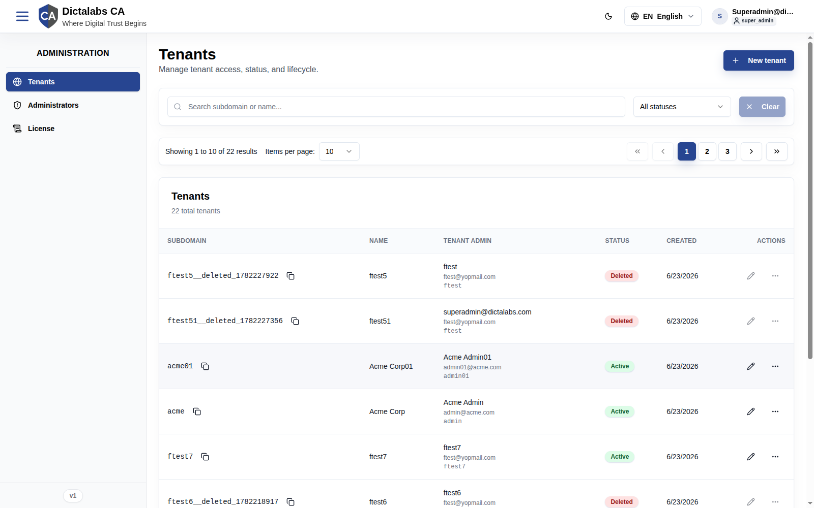
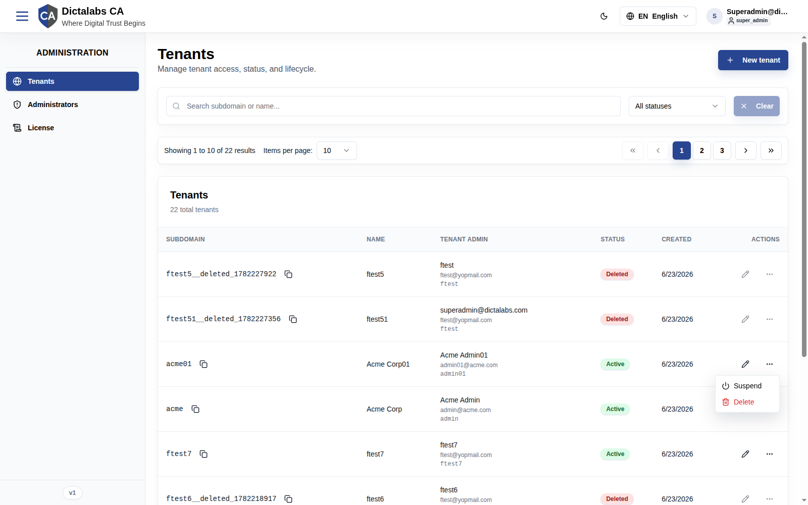
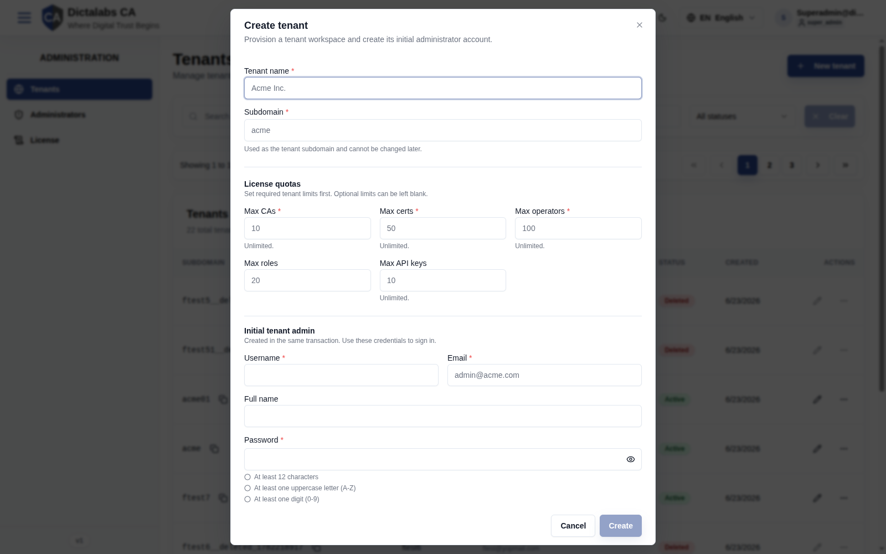
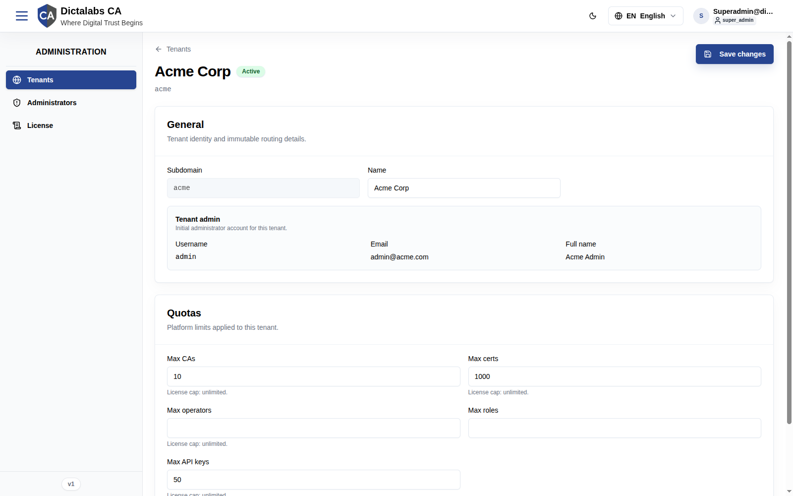

Tenant Management
Purpose
Tenants are isolated customer workspaces. This module lets a System Administrator create tenants, set their resource quotas, manage their lifecycle (active / suspended / deleted), and open a tenant's detail page to adjust its limits. It solves the problem of running one CA service for many organizations without letting their data or configuration mix.
Who should use it: Super Admins responsible for onboarding and governing tenants.
Navigation
Administration → Tenants (/platform/tenants)
Overview
The Tenants page has:
- Header with page title and a New tenant button.
- Filter bar — search by subdomain or name, a status filter (All statuses / Active / Suspended / Deleted), and a Clear button.
- Pagination controls — "Showing X to Y of N results", items-per-page selector (default 10), and page navigation.
- Tenants table — columns: Subdomain, Name, Tenant admin (name / email / username), Status, Created, Actions.

Each row's Subdomain cell has a Copy tenant URL button. The Actions column has an Edit link (opens the tenant detail page) and an Actions menu. For Deleted tenants, editing and the actions menu are disabled (label: "Editing is unavailable for deleted tenants").
Row Actions menu
For an active tenant the actions menu offers Suspend and Delete. A suspended tenant offers Reactivate instead of Suspend.

Fields — Create Tenant dialog
Opened with New tenant. "Provision a tenant workspace and create its initial administrator account."

| Field | Description | Required | Notes |
|---|---|---|---|
| Tenant name | Human-readable name (e.g. Acme Inc.) | Yes | — |
| Subdomain | Tenant subdomain / slug (e.g. acme) |
Yes | Cannot be changed later. Lowercase letters, digits, hyphens; reserved names blocked. |
| Max CAs | License quota: max certificate authorities | Yes | Blank = Unlimited. |
| Max certs | License quota: max certificates | Yes | Blank = Unlimited. |
| Max operators | License quota: max operator accounts | Yes | Blank = Unlimited. |
| Max roles | License quota: max roles | No | Optional limit. |
| Max API keys | License quota: max API keys | Yes | Blank = Unlimited. |
| Username | Initial tenant admin username | Yes | Created in the same transaction. |
| Initial tenant admin email | Yes | — | |
| Full name | Initial tenant admin full name | No | — |
| Password | Initial tenant admin password | Yes | Must satisfy: ≥12 chars, ≥1 uppercase, ≥1 digit, ≥1 special character. |
| Confirm password | Re-enter password | Yes | Must match Password. |
The Create button stays disabled until all required fields are valid.
Fields — Tenant Detail page
Open via a row's Edit link (/platform/tenants/<id>). Sections:

General
| Field | Description | Required | Notes |
|---|---|---|---|
| Subdomain | Tenant routing slug | — | Read-only (immutable). |
| Name | Display name | Yes | Editable. |
| Tenant admin (Username / Email / Full name) | The seeded admin account | — | Read-only summary. |
Quotas (license cap shown beneath each)
| Field | Description | Required | Notes |
|---|---|---|---|
| Max CAs | Max certificate authorities | No | Shows "License cap: …". |
| Max certs | Max certificates | No | — |
| Max operators | Max operator accounts | No | — |
| Max roles | Max roles | No | — |
| Max API keys | Max API keys | No | — |
| Request rate limit | Max requests per minute for this tenant | No | Blank = system default. |
Actions
- New tenant — open the Create Tenant dialog.
- Copy tenant URL — copy the tenant's login URL to the clipboard.
- Edit — open the tenant detail page.
- Save changes (detail page) — persist name / quota / rate-limit edits.
- Suspend — block tenant access (status → Suspended); reversible.
- Reactivate — restore a suspended tenant to Active.
- Delete — archive the tenant (soft delete); subdomain becomes reusable, data retained.
Step-by-Step — Create a tenant
- Open Administration → Tenants.
- Click New tenant.
- Enter Tenant name and Subdomain (the subdomain is permanent).
- Set the required License quotas (leave optional ones blank for Unlimited).
- Fill the Initial tenant admin Username, Email, (Full name), and a compliant Password + confirmation.
- Click Create.
Step-by-Step — Suspend / Reactivate / Delete
- On the Tenants list, find the tenant row.
- Open the Actions menu.
- Choose Suspend, Reactivate, or Delete and confirm.
Expected Result
- Create: the tenant's schema is provisioned, the admin role/permissions are seeded, and the initial admin is created; the tenant appears as Active and is reachable at its subdomain.
- Suspend: tenant users can no longer sign in until reactivated.
- Delete: the tenant is marked Deleted, its subdomain is freed for reuse, and its row's edit/actions controls are disabled.
Note: this guide documents the read-only/open state of each dialog. Post-submit confirmation screens were not captured because the audit did not create live records.
Notes
- Best practice: choose subdomains carefully — they are immutable. Plan a naming convention.
- Warning: Delete is a tenant-wide action. Use Suspend for temporary lockouts.
- Common mistake: leaving a required quota blank expecting a default — blank means Unlimited.
- Quotas are enforced at runtime; a tenant hitting its CA/cert/API-key cap will be blocked from creating more until the limit is raised on the detail page.